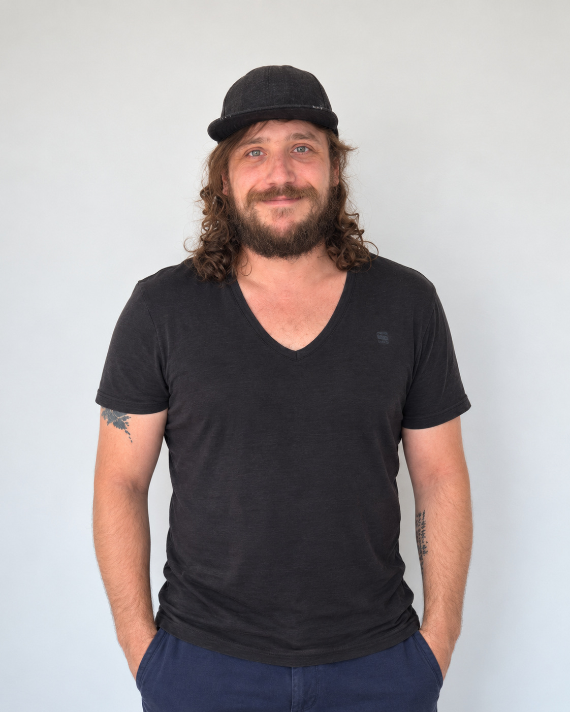

LIFE_RPG_APP
Een Godot-prototype waarin ik lokale opslag, statusbeheer en gebruikersinteractie onderzoek.
SOFTWARE DEVELOPER // PORTFOLIO
Ik ben een beginnende softwareontwikkelaar met een sterke maker-mentaliteit en technische nieuwsgierigheid. Via het Graduaat Programmeren aan Thomas More ontwikkel ik mijn vaardigheden verder richting een professionele rol.

01 // OVER MIJ
Mijn achtergrond ligt in technisch en praktisch werk, zelfstandig ondernemen en het bouwen van eigen projecten. Vandaag ontwikkel ik mijn programmeervaardigheden verder aan Thomas More.
Ik combineer technische nieuwsgierigheid met een praktische aanpak: onderzoeken, bouwen, testen en verbeteren.
02 // GESELECTEERDE PROJECTEN
Een Godot-prototype waarin ik lokale opslag, statusbeheer en gebruikersinteractie onderzoek.

Een technisch 3D-gameplayprototype met beweging, combat en samenwerkende spelsystemen.

Een responsive front-endprototype met HTML, CSS en JavaScript.